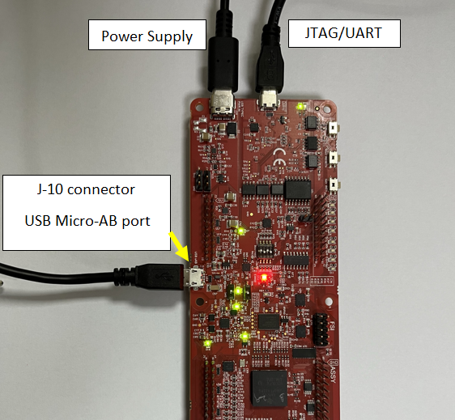
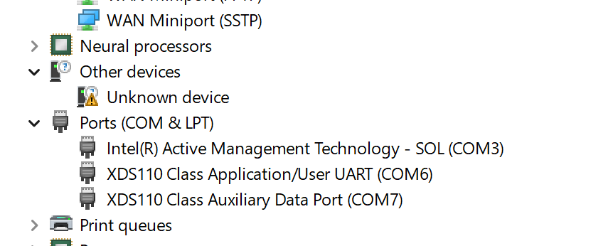
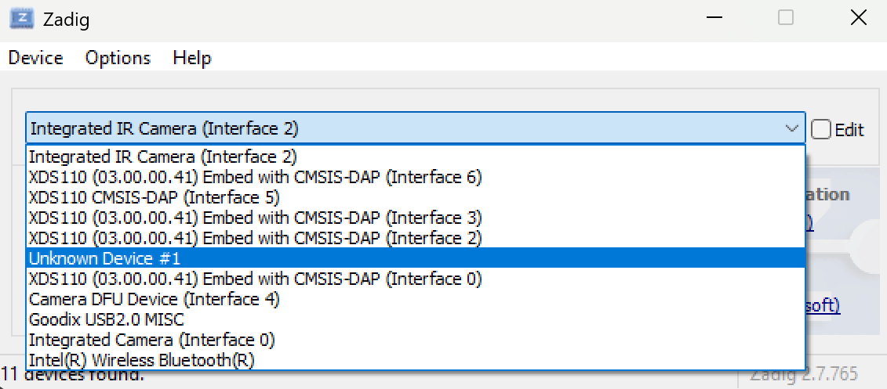
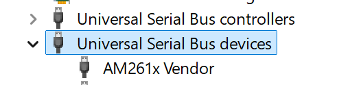
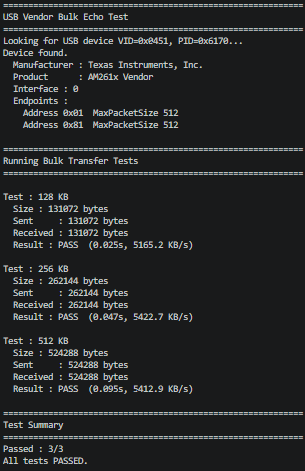

|
AM261x MCU+ SDK
26.00.00
|
|
|
AM261x MCU+ SDK
26.00.00
|
|
This example is a USB device Vendor class application based on TinyUSB.
The example does the below
| Parameter | Value |
|---|---|
| CPU + OS | r5fss0-0_nortos |
| r5fss0-0_freertos | |
| Toolchain | ti-arm-clang |
| Board | am261x-lp |
| Example folder | examples/usb/device/vendor_bulk_echo |
ti_usb_descriptor.c for this example. The actual USB descriptors are provided by usb_descriptors.c which is part of the example source.

A vendor-specific USB device has no built-in OS driver. On first connection, Windows will show the device as Unknown device in Device Manager.

To communicate with the device, install the WinUSB driver using the Zadig tool:

After driver installation:
The device should now appear as AM261x Vendor under Universal Serial Bus devices in Device Manager.

A Python test script is provided in the SDK to verify the bulk echo functionality:
tools/usb_test_scripts/usb_vendor_bulk_echo_test.py
The script sends three bulk transfer payloads of increasing size (128 KB, 256 KB, 512 KB) to the device and verifies that the echoed data matches exactly. It reports the result, elapsed time, and throughput for each test.
Install the PyUSB library using pip:
pip install pyusb
PyUSB requires the libusb backend DLL on Windows.
libusb-1.0.dll under VS2019\MS64\dll\ (for 64-bit systems).libusb-1.0.dll in the same directory as the test script: tools/usb_test_scripts/libusb-1.0.dll
libusb-1.0.dll is in a different location, update the LIBUSB_DLL_PATH variable at the top of the script accordingly.With the example running on the board and the USB cable connected, run:
python usb_vendor_bulk_echo_test.py
If all tests pass, the output should look as follows:

 1.8.20
1.8.20